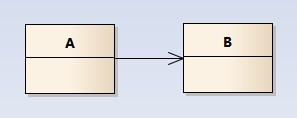

看懂UML类图和时序图¶
这里不会将UML的各种元素都提到，我只想讲讲类图中各个类之间的关系； 能看懂类图中各个类之间的线条、箭头代表什么意思后，也就足够应对 日常的工作和交流； 同时，我们应该能将类图所表达的含义和最终的代码对应起来； 有了这些知识，看后面章节的设计模式结构图就没有什么问题了；
本章所有图形使用Enterprise Architect 9.2来画,所有示例详见根目录下的design_patterns.EAP
从一个示例开始¶
请看以下这个类图，类之间的关系是我们需要关注的：

车的类图结构为<<abstract>>，表示车是一个抽象类；
它有两个继承类：小汽车和自行车；它们之间的关系为实现关系，使用带空心箭头的虚线表示；
小汽车为与SUV之间也是继承关系，它们之间的关系为泛化关系，使用带空心箭头的实线表示；
小汽车与发动机之间是组合关系，使用带实心箭头的实线表示；
学生与班级之间是聚合关系，使用带空心箭头的实线表示；
学生与身份证之间为关联关系，使用一根实线表示；
学生上学需要用到自行车，与自行车是一种依赖关系，使用带箭头的虚线表示；
下面我们将介绍这六种关系；
类之间的关系¶
泛化关系(generalization)¶
类的继承结构表现在UML中为：泛化(generalize)与实现(realize)：
继承关系为 is-a的关系；两个对象之间如果可以用 is-a 来表示，就是继承关系：（..是..)
eg：自行车是车、猫是动物
泛化关系用一条带空心箭头的直接表示；如下图表示（A继承自B）；

eg：汽车在现实中有实现，可用汽车定义具体的对象；汽车与SUV之间为泛化关系；

注：最终代码中，泛化关系表现为继承非抽象类；
实现关系(realize)¶
实现关系用一条带空心箭头的虚线表示；
eg：”车”为一个抽象概念，在现实中并无法直接用来定义对象；只有指明具体的子类(汽车还是自行车)，才 可以用来定义对象（”车”这个类在C++中用抽象类表示，在JAVA中有接口这个概念，更容易理解）

注：最终代码中，实现关系表现为继承抽象类；
聚合关系(aggregation)¶
聚合关系用一条带空心菱形箭头的直线表示，如下图表示A聚合到B上，或者说B由A组成；

聚合关系用于表示实体对象之间的关系，表示整体由部分构成的语义；例如一个部门由多个员工组成；
与组合关系不同的是，整体和部分不是强依赖的，即使整体不存在了，部分仍然存在；例如， 部门撤销了，人员不会消失，他们依然存在；
组合关系(composition)¶
组合关系用一条带实心菱形箭头直线表示，如下图表示A组成B，或者B由A组成；

与聚合关系一样，组合关系同样表示整体由部分构成的语义；比如公司由多个部门组成；
但组合关系是一种强依赖的特殊聚合关系，如果整体不存在了，则部分也不存在了；例如， 公司不存在了，部门也将不存在了；
关联关系(association)¶
关联关系是用一条直线表示的；它描述不同类的对象之间的结构关系；它是一种静态关系， 通常与运行状态无关，一般由常识等因素决定的；它一般用来定义对象之间静态的、天然的结构； 所以，关联关系是一种“强关联”的关系；
比如，乘车人和车票之间就是一种关联关系；学生和学校就是一种关联关系；
关联关系默认不强调方向，表示对象间相互知道；如果特别强调方向，如下图，表示A知道B，但 B不知道A；
注：在最终代码中，关联对象通常是以成员变量的形式实现的；
依赖关系(dependency)¶
依赖关系是用一套带箭头的虚线表示的；如下图表示A依赖于B；他描述一个对象在运行期间会用到另一个对象的关系；

与关联关系不同的是，它是一种临时性的关系，通常在运行期间产生，并且随着运行时的变化； 依赖关系也可能发生变化；
显然，依赖也有方向，双向依赖是一种非常糟糕的结构，我们总是应该保持单向依赖，杜绝双向依赖的产生；
注：在最终代码中，依赖关系体现为类构造方法及类方法的传入参数，箭头的指向为调用关系；依赖关系除了临时知道对方外，还是“使用”对方的方法和属性；
时序图¶
为了展示对象之间的交互细节，后续对设计模式解析的章节，都会用到时序图；
时序图（Sequence Diagram）是显示对象之间交互的图，这些对象是按时间顺序排列的。时序图中显示的是参与交互的对象及其对象之间消息交互的顺序。
时序图包括的建模元素主要有：对象（Actor）、生命线（Lifeline）、控制焦点（Focus of control）、消息（Message）等等。
关于时序图，以下这篇文章将概念介绍的比较详细；更多实例应用，参见后续章节模式中的时序图；
附录¶
在EA中定义一个抽象类（其版型为《abstract》)